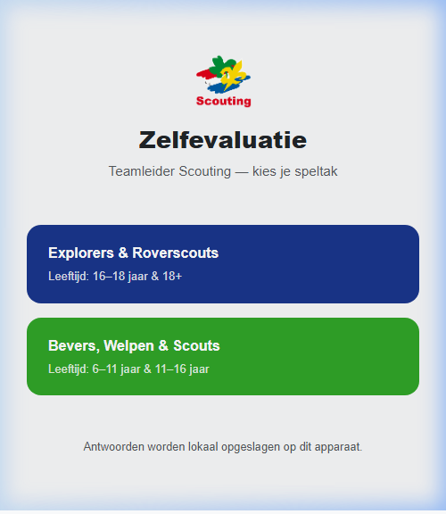
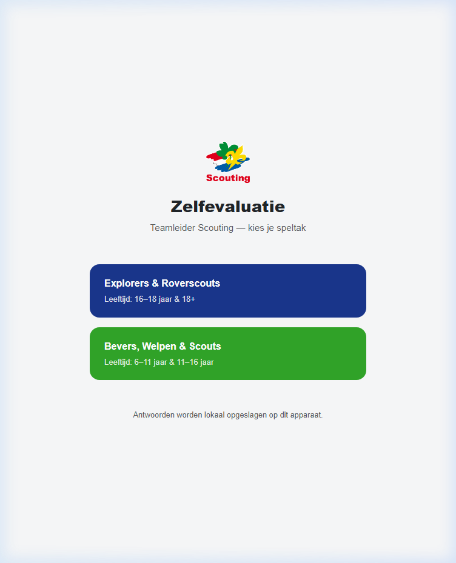
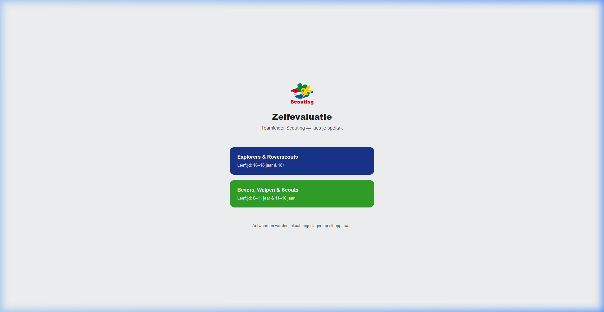
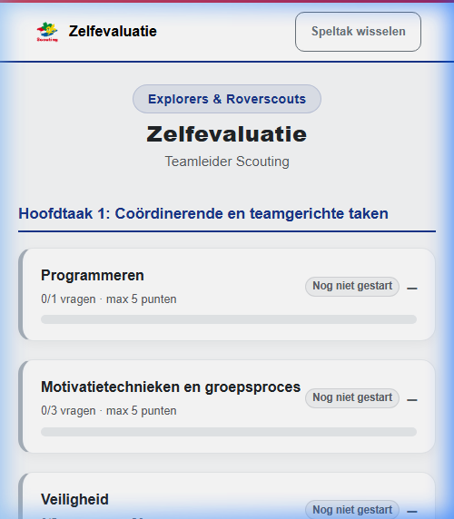
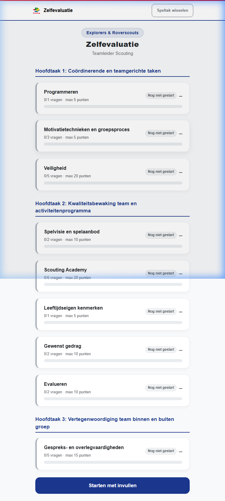
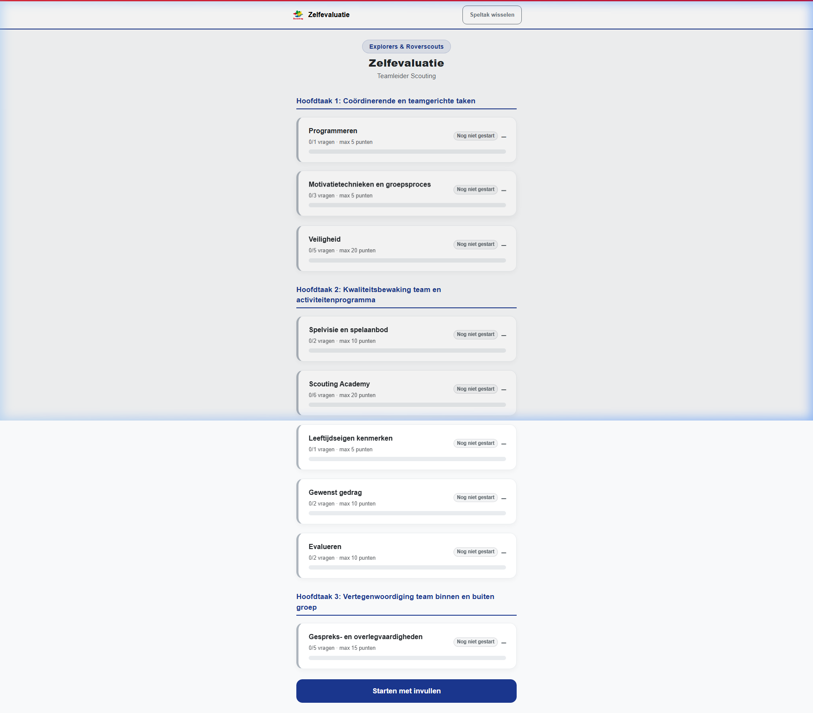
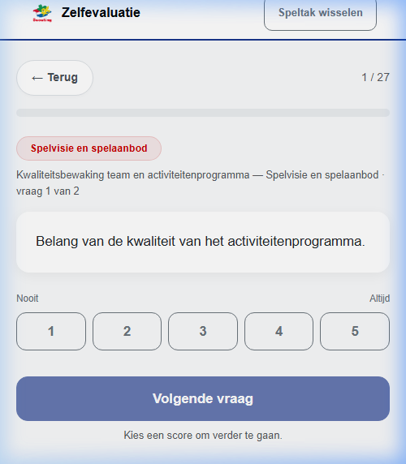
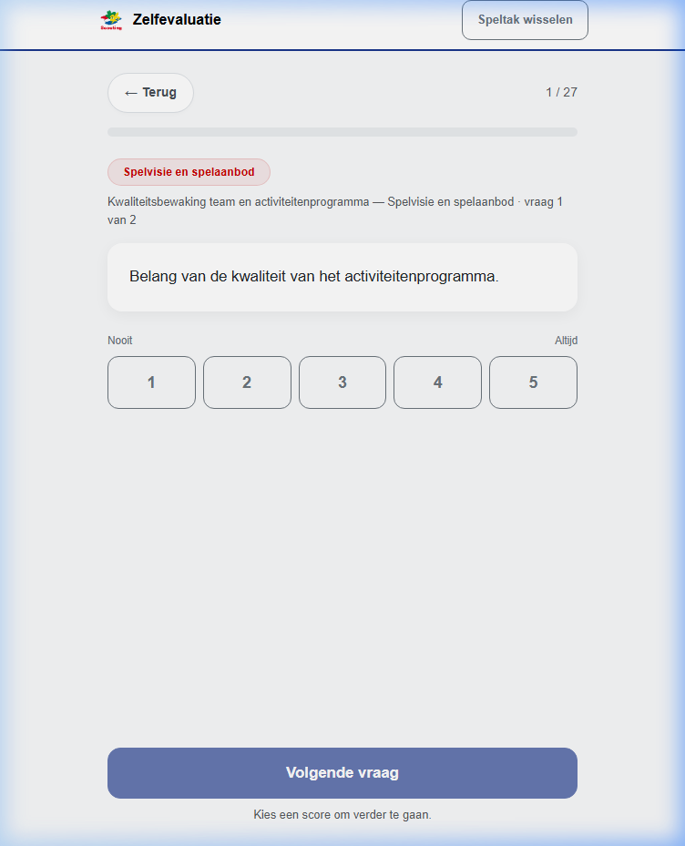
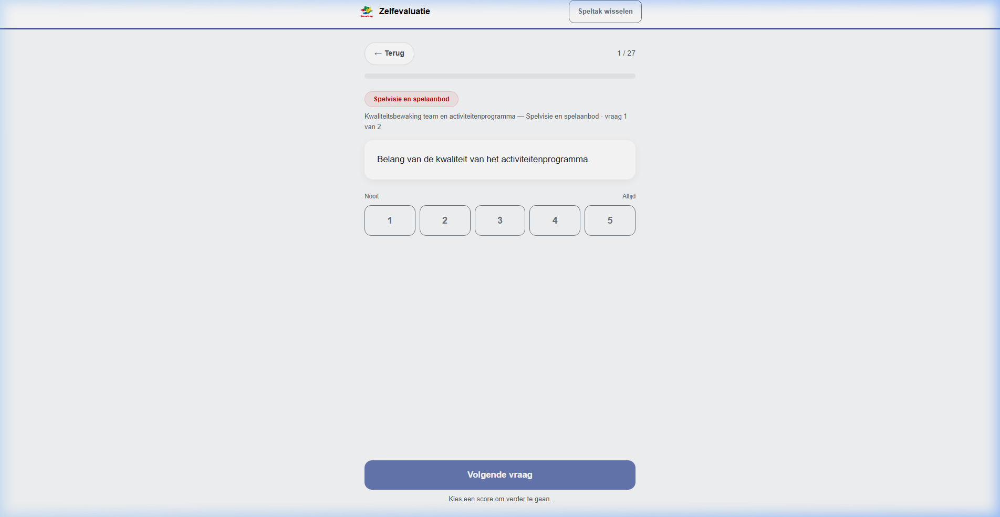

Zelfevaluatie Teamleider Scouting — Frontend Webapplicatie
Het selectiescherm waar gebruikers een speltak kiezen (Explorers & Roverscouts of Bevers, Welpen & Scouts).



Het overzicht met alle modules/taken en hun voortgang, inclusief de navigatiebalk.



Het scherm waar gebruikers vragen beantwoorden met een schaal van 1 tot 5.



| Browser | Compatibiliteit | Opmerking |
|---|---|---|
| Google Chrome | Volledig compatibel | Getest via Chromium — werkt correct |
| Microsoft Edge | Volledig compatibel | Zelfde engine als Chrome (Chromium-based) |
| Mozilla Firefox | Verwacht compatibel | Bootstrap 5 ondersteunt Firefox volledig |
| Apple Safari | Verwacht compatibel | Bootstrap 5 ondersteunt Safari volledig |
| Aspect | Beoordeling | Details |
|---|---|---|
| Startscherm layout | Goed | Knoppen schalen mee op alle formaten, tekst blijft leesbaar |
| Overzichtsscherm kaarten | Goed | Module-kaarten stapelen netjes verticaal op alle formaten |
| Navigatiebalk | Goed | Logo + knoppen passen op mobiel, tablet en desktop |
| Vraagscherm | Goed | Scoreknoppen (1-5) passen naast elkaar, ook op mobiel |
| Typografie | Goed | Tekst is leesbaar op alle formaten |
| Max-width container | Goed | Content beperkt tot 540px, voorkomt te brede layouts op desktop |
| Aspect | Beoordeling | Details |
|---|---|---|
| Desktop whitespace | Opmerking | Door de max-width: 540px is er op desktop veel lege ruimte links en rechts. Dit is een bewuste keuze (mobile-first design). |
| Navbar op mobiel | Klein punt | De "Speltak wisselen" knop is relatief groot op heel kleine schermen, maar past nog net. |
| Test | Resultaat |
|---|---|
| Browser (Chromium) | Geslaagd |
| Desktop (1920 x 1080) | Geslaagd |
| Tablet (768 x 1024) | Geslaagd |
| Mobiel (375 x 667) | Geslaagd |
| Responsive design | Geslaagd — geen kritieke issues |
De Zelfevaluatie-tool is goed responsive en werkt correct op alle geteste schermformaten. De mobile-first aanpak met Bootstrap 5 zorgt voor een consistente en gebruiksvriendelijke ervaring op mobiel, tablet en desktop.